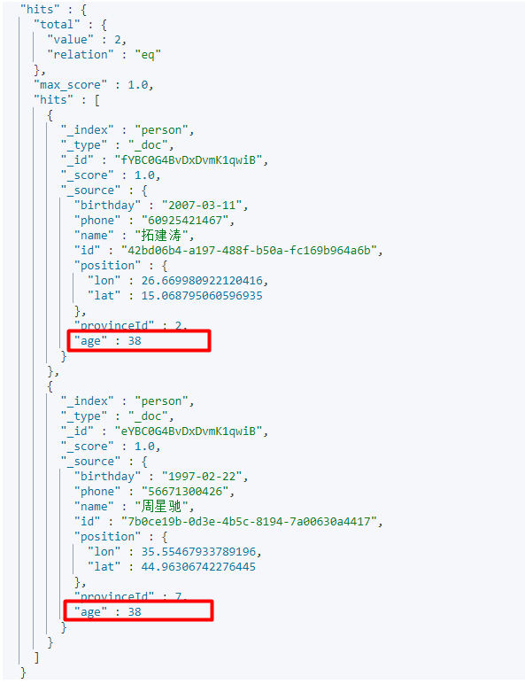
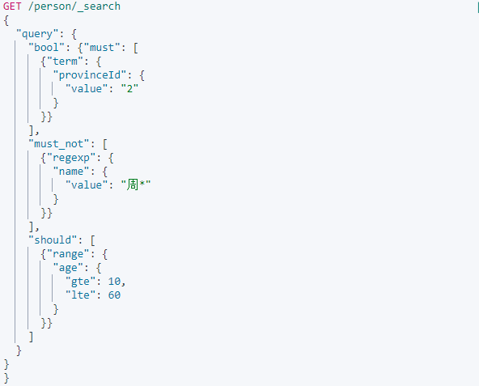
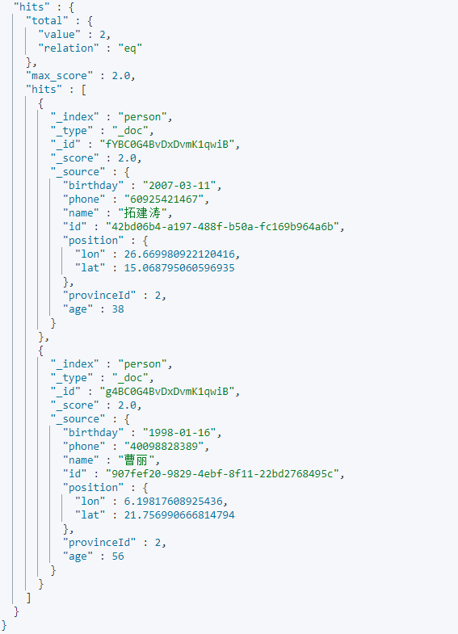

原文连接:https://www.cnblogs.com/wyq178/p/11968529.html
前言：之前写过如何安装ElasticSearch(以下简称ES)以及简单的crud的使用实例的博客,不过ElasticSearch的版本变化太快,像之前的5.6版本使用的TransPortClient目前已经无法使用了,官方的API变化较快.最近工作中需要用到ES作为查询的中间件,项目组长决定使用7.4.2最新版本,在项目中如何使用ElasticSearch整个任务交给了我,经过几天的研究(瞎折腾),终于把基本的使用方法搞明白了,因为网上关于7.4.2版本的API使用说明实在太少，所以我决定整理成一篇博客发出来~
目录
一：ES的基本数据类型
二：查询的基本语言
三：使用实例
四：总结
正文
一：ES的基本数据类型
ES的数据类型大概可以分为以下几种,值得注意的是ES是没有java中的list或者set这个概念的,每种类型都天然的支持list多层数据,但是如果设置为list的类信息,就必须将数据类型指定为nested，详情看以下介绍：
二：基本的查询语言
es的查询语言叫做QSL,也就是它的查询语言,和mysql的sql概念类似,所有的查询都需要去匹配相关的QSL才能得到信息,同时QSL又有自己的语法，必须遵守语法才能得到我们想要的信息,接下来我们就来解析一下QSL.
1.1:Index
Index是ES的数据库的概念，所以一开始就必须建立索引,在7.4.2版本中已经去除了type的概念。所以不需要建立type,在ES中创建一个index也是十分简单的,按照官方的文档,注意索引的名字只能是小写,不能是大写,否则会报错,建立一个index的QSL如下,使用PUT请求的格式(注意PUT要大写)，斜杠后面跟上index的名字,然后在设置里写上分片和副本的数量(如果不指定的话,ES会默认设置为shards和replicas为1)。关于如何定义shards和replicas的数量,请参考xxx.
1.2:mapping
建立mapping就好比是mysql中创建表结构,我们要来表达业务必须在mapping里面创建具体的数据properties(properties就好比是mysql表中的字段概念),完整的创建一个mapping的结构如下，使用PUT请求,在proerties中声明field的类型,在type中声明数据类型，需要注意的是es的mapping创建之后无法修改,如果需要修改需要重新建立index,然后reindex迁移数据，所以创建mapping之前一定要考虑清楚具体的业务
1.3:创建index的同时创建mapping
在1.1和1.2中创建index和mapping是分开的,其实也可以一步到位同时创建index和mapping,使用如下语法,在index中声明mappings，具体的创建结构和1.2的mapping保持一致
实例：我们来创建一个人,这个有年龄、名字、出生日期等属性(以下命令可以在kibana中直接使用，详情请安装kiana)
PUT /person
{
"settings" : {
"index" : {
"number_of_shards" : 2,
"number_of_replicas" : 1
}
},
"mappings":{
"properties":{
"id":{
"type":"keyword"
},
"name":{
"type":"text",
"analyzer": "ik_max_word"
},
"age":{
"type":"integer"
},
"phone":{
"type":"text"
}, "birthday":{
"type":"date"
},
"position":{
"type":"geo_point"
},
"provinceId":{
"type":
"integer"
}
}
}
}以下结果表示创建成功:
1.4:match
match是模糊匹配查询(和fuzzy不同)，根据分词器(如果创建mapping没有指定分词器，Es将会采取默认的分词器:standard,standard分词将会把匹配的词组分成单个的字,而不是短语)将指定的query查询的语句进行分词匹配，如下的match是在index中查询messae字段中包含test字段的短语：
实例：查询person中name为周星驰的文档：
以为name字段指定了分词器为”ik_max_word“,在分词器下”周星驰“三个字会进行拆分，只要匹配到任一词汇就会返回，这里需要注意不是全部匹配

匹配结果:
1.5:match_pharse
match_pharse属于短语匹配,要求查询的词句和匹配的短语顺序必须一致,并且是连续的，但可以设置 slop 值来指定查询项之间可以分隔多远的距离
实例：
这里故意颠倒了词组顺序,可以看出来没有匹配到任何结果：
1.6:fuzzy
fuzzy查询的时候,不会根据分词器匹配,只会进行拆分,比如查询的是"周大驰",在分词器下(也就是match中)是无法匹配到单个词的，因为它不是一个短语,但是在fuzzy中是可以匹配的，并且fuzzy支持模糊和一定的容错查询匹配,因为它做的是匹配词的拆分,并不是短语。
返回的结果：
1.7:regexp
正则表达式匹配，该匹配模式下我们可以按照正则表达式的符号去匹配具体的值,比如name字段，可以包含有.和*去正则匹配具体的值，?表示任一字符，*表示所有字符，还有其他的正则符号都可以使用，详情参考https://www.elastic.co/guide/en/elasticsearch/reference/6.8/query-dsl-regexp-query.html#regexp-syntax
匹配手机号以1到9之前的开头，并且第二位是3最后一位是0或者1的手机号
1.8:wildcard
通配符匹配，wildcard和regexp类似,不过它们也有不同之处。regexp的实际匹配能力要大于wildcard，在进行简单的匹配时候，比如名字的*或者?的简单普通匹配,建议使用wildcard而不是regexp,wildcard的效率要高于regexp，regexp可以实现更为复杂的场景,但是效率低一些,通俗的说wildcard是regexp的简化版本.
这里采用通配符匹配手机的电话号，*表示多个字符，可以看到匹配结果
1.9:multi_match
多字段匹配，比如在查询test这个值的时候我们不仅需要在A这个字段中查询，同时它也有可能存在B中，按照普通的写法你可能需要写两次查询，但是使用了multi_search只需要指定具体的fields就可以实现多字段查询
实例:同时在age字段和phone字段搜索包含38这个数字的文档

2.0：term
term的英文含义表示是:精确的意思，在term查询中，表示做的是精确查询，整词匹配，不会对所匹配项进行拆分。举个例子在field字段中查询Yrion这个词，那么它不会进行拆分，直接以整词Yrion进行匹配，如果能查询到就命中该文档：
这里查询的name为周星星,term不会分词,因为没有任何文档的name匹配,所以不会命中任何结果
2.1:terms
terms和term的区别就是terms允许匹配多个值，而term只允许匹配一个值,在进行多值匹配的场景中可以使用terms,terms匹配到其中任何一个值就会认为整个文档是匹配的,terms多个值如果多个都匹配会返回所有文档
实例：查询age为24、66的任一值，查到就返回文档，可以看出命中了两个文档
2.2:range
range表示一个区间范围查找,这个范围可以是日期或者数值,类似于mysql中的between,不过ES的range比较灵活和明确,可以指定两个边界是否包含。如下的查询表示寻找age在10和20之间的数据
实例：查询age为20到30区间所有文档,include_lower表示是否包含边界最小值(true表示包含),include_upper表示是否包含边界最大值(true表示包含,false表示不包含)
返回结果：
2.7:bool
bool表示逻辑关系的查询,must表示and的关系，should表示or的关系，mustNot表示not的关系
实例：查询省份在北京(provinceId:2)或者年龄在10-60岁之间的并且名字不姓周的人：


2.8:geo
geo表示根据经纬度进行地理位置的查找，ES提供了地理位置的三种查找方式：①以指定的经纬度为圆心,距离为半径画圆搜索周围区间落到的点 ②：以指定的经纬度组成多边形(geo_shape),查找矩形中的点。不过需要注意的是geo搜索需要将field指定为geo_ponint的数据类型,否则在查询的时候会报错.以下表示以-70和40为中心圆点,查找距离为12km的文档，如果符合这个距离的条件，就会hit到文档

以经度为47.998，维度为63.841为中心寻找周围5公里的位置：
2.9:sort
sort表示排序，ES提供了三种排序方式①:按照文档的得分来排序,ES会自动根据查询的条件来匹配文档,每个文档命中值就会有一个score值,可以按照score值进行排序 ②按照指定字段的值可以倒序,也可以正序③按照指定地理位置的距离来进行排序,这里需要注意的就是在排序字段上如果是text类型就必须开启 fielddata，而keyword可以直接用来排序，所以建议如果要给字段排序就最好声明为keyword类型
这里指定了匹配所有文档,然后按照年龄的降序排序desc表示降序,esc表示升序
3.0:page
ES默认返回的条数值为10，如果想改变返回的条数值,可以指定size的大小,也可以指定from的起始位置,也就好比mysql中的pageIndex,size是pageSize,对应于mysql中的limit 0,5,则在ES中是from 0 to 5:
这里选择返回两条数据,表示分页的大小为2，可以看出最终的结果是只返回了两条数据：
二：使用实例
首先来定义这样一个场景,有很多人的文档人的属性有年龄、名字、爱好、职业、出生日期、地理位置等属性,我们需要找到符合指定条件的人，这里就需要用到查询的方式，我们首先来创建person整个index，然后创建mapping结构,之后put进去数据,可能还会涉及到person的修改或者删除，之后可以建立复杂的查询来模拟现实的业务场景.具体的api可以查询官方文档，API就不做说明了，git地址的代码里都有，就不做搬运工了
关于查询的API代码都放在了git中,使用的是官网的API,地址如下,有兴趣的可以研究下： https://gitee.com/Yrion/elasticsearchApiTest.git
接口已经写好,结合前端可以直接实现增删改查,整体架构也比较简单：
三：总结
本篇博客总结了ElasticSearch的一些基本查询语法,并给出了实际查询的例子,只要是学会了语法，查询的API很容易学会，具体的代码也在git中给出，作为一款全文检索引擎，ES的效率和使用的场景都可见一斑,ES基本属于程序员必须掌握的一项学习技能。目前开源的搜索引擎还有阿里的opensearch,两者各有千秋~opensearch以后有机会研究，总之在全文搜索的路上，ES基本是必经之路，加油！
最后: 如果对学习java有兴趣可以加入群:618626589,本群旨在打造无培训广告、无闲聊扯皮、无注水斗图的纯技术交流群，群里每天会分享有价值的问题和学习资料,欢迎各位随时加入～